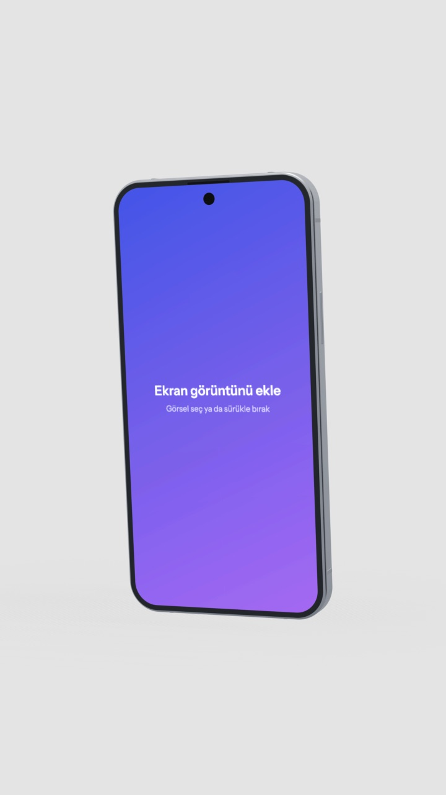

<!doctype html>
<html lang="tr">
<head>
<meta charset="utf-8">
<meta name="viewport" content="width=device-width,initial-scale=1">
<title>Eksen göstergesi seçenekleri</title>
<link href="https://fonts.googleapis.com/css2?family=Inter:wght@400;500;600&display=swap" rel="stylesheet">
<style>
:root{--canvas:#efeff0;--panel:#fff;--field:#f4f4f5;--line:#e6e6e9;--line-strong:#d2d2d7;--ink:#18181b;--ink-2:#52525b;--muted:#8a8a93;--accent:#0b68f5;
  --x:#e5484d;--y:#30a46c;--z:#3e63dd}
:root[data-theme="dark"]{--canvas:#1c1c1e;--panel:#262628;--field:#323235;--line:#37373b;--line-strong:#4a4a50;--ink:#f2f2f3;--ink-2:#b9b9bf;--muted:#85858d;--accent:#3d8bff;
  --x:#ff6369;--y:#3dd68c;--z:#7b93ff}
body{margin:0;font:12px/16px Inter,system-ui,sans-serif;color:var(--ink);background:var(--canvas)}
.wrap{display:grid;grid-template-columns:repeat(4,1fr);gap:16px;padding:24px}
.card{background:var(--panel);border-radius:10px;box-shadow:0 0 0 1px var(--line);padding:16px;display:flex;flex-direction:column;align-items:center;gap:10px}
.card h2{margin:0;font-size:13px;font-weight:600;align-self:flex-start}
.card p{margin:0;color:var(--muted);font-size:11px;line-height:15px;align-self:flex-start}
.board{width:100%;aspect-ratio:4/5;border-radius:4px;background:linear-gradient(to bottom right,#dfe6ff,#f4dcea);position:relative;overflow:hidden}
.board img{position:absolute;inset:0;width:100%;height:100%;object-fit:cover}
.slot{position:absolute;right:10px;top:10px}
svg{display:block;overflow:visible}
.cap{font-size:10px;fill:var(--muted)}
.lbl{font-size:9px;font-weight:600}
</style>
</head>
<body>
<div class="wrap" id="wrap"></div>
<script>
const NS='http://www.w3.org/2000/svg';
const el=(t,a,p)=>{const e=document.createElementNS(NS,t);for(const k in a)e.setAttribute(k,a[k]);if(p)p.appendChild(e);return e;};
const D=Math.PI/180;
// scene rotation YXZ like the app (pivot.rotation)
function rot(v,rx,ry){let [x,y,z]=v;
  // Y then X (YXZ order applied to vectors: R = Ry*Rx*Rz)
  let y1=y*Math.cos(rx*D)-z*Math.sin(rx*D),z1=y*Math.sin(rx*D)+z*Math.cos(rx*D);y=y1;z=z1;
  let x2=x*Math.cos(ry*D)+z*Math.sin(ry*D),z2=-x*Math.sin(ry*D)+z*Math.cos(ry*D);return [x2,y,z2];}
const C={x:'var(--x)',y:'var(--y)',z:'var(--z)'};
const ANG={rx:-8,ry:28};

/* --- current (for comparison) */
function current(svg,{rx,ry}){
  const R=34;el('circle',{r:R+12,fill:'var(--panel)','fill-opacity':.85,stroke:'var(--line)'},svg);
  const ends=[];['x','y','z'].forEach(a=>[1,-1].forEach(s=>{const v=rot([a==='x'?s:0,a==='y'?s:0,a==='z'?s:0],rx,ry);ends.push({a,s,x:v[0]*R,y:-v[1]*R,z:v[2]});}));
  ends.filter(e=>e.s>0).forEach(e=>el('line',{x1:0,y1:0,x2:e.x,y2:e.y,stroke:C[e.a],'stroke-width':2.2,'stroke-linecap':'round'},svg));
  ends.sort((a,b)=>a.z-b.z).forEach(e=>{const g=el('g',{transform:`translate(${e.x} ${e.y})`,opacity:e.z<-.2?.55:1},svg);
    el('circle',{r:e.s>0?8:6,fill:e.s>0?C[e.a]:'var(--panel)',stroke:C[e.a],'stroke-width':2},g);
    if(e.s>0){const t=el('text',{'text-anchor':'middle','dominant-baseline':'central',class:'lbl',fill:'#fff'},g);t.textContent=e.a.toUpperCase();}});
}

/* --- A: globe (light-map language) */
function globe(svg,{rx,ry}){
  const R=38;
  el('circle',{r:R,fill:'var(--field)',stroke:'var(--line)','stroke-width':1},svg);
  // horizon (floor plane) as an ellipse seen from the camera tilt, and the equator ring
  const tilt=Math.abs(Math.sin(rx*D));
  el('ellipse',{rx:R*.98,ry:Math.max(.5,R*.98*tilt),fill:'none',stroke:'var(--line-strong)','stroke-dasharray':'3 4'},svg);
  el('circle',{r:R*.5,fill:'none',stroke:'var(--line)','stroke-dasharray':'3 4'},svg);
  // axis ends: positive = colored dot with letter, negative = small hollow dot; thin muted spokes
  const ends=[];['x','y','z'].forEach(a=>[1,-1].forEach(s=>{const v=rot([a==='x'?s:0,a==='y'?s:0,a==='z'?s:0],rx,ry);ends.push({a,s,x:v[0]*R*.78,y:-v[1]*R*.78,z:v[2]});}));
  ends.filter(e=>e.s>0).forEach(e=>el('line',{x1:0,y1:0,x2:e.x,y2:e.y,stroke:C[e.a],'stroke-width':1.5,'stroke-linecap':'round',opacity:.55},svg));
  el('circle',{r:2,fill:'var(--muted)'},svg);
  ends.sort((a,b)=>a.z-b.z).forEach(e=>{const g=el('g',{transform:`translate(${e.x.toFixed(1)} ${e.y.toFixed(1)})`,opacity:e.z<-.25?.45:1},svg);
    if(e.s>0){el('circle',{r:7,fill:C[e.a],stroke:'var(--panel)','stroke-width':1.5},g);const t=el('text',{'text-anchor':'middle','dominant-baseline':'central',class:'lbl',fill:'#fff'},g);t.textContent=e.a.toUpperCase();}
    else el('circle',{r:3.5,fill:'var(--panel)',stroke:C[e.a],'stroke-width':1.5},g);});
  const t=el('text',{y:R+14,'text-anchor':'middle',class:'cap'},svg);t.textContent=`${Math.round(ry)}° · ${Math.round(rx)}°`;
}

/* --- B: view cube */
function cube(svg,{rx,ry}){
  const S=19,P=[[-1,-1,-1],[1,-1,-1],[1,1,-1],[-1,1,-1],[-1,-1,1],[1,-1,1],[1,1,1],[-1,1,1]].map(v=>rot(v,rx,ry));
  const F=[{n:'Ön',i:[4,5,6,7],nrm:[0,0,1]},{n:'Arka',i:[1,0,3,2],nrm:[0,0,-1]},{n:'Sağ',i:[5,1,2,6],nrm:[1,0,0]},{n:'Sol',i:[0,4,7,3],nrm:[-1,0,0]},{n:'Üst',i:[7,6,2,3],nrm:[0,1,0]},{n:'Alt',i:[0,1,5,4],nrm:[0,-1,0]}];
  el('circle',{r:40,fill:'var(--field)',stroke:'var(--line)'},svg);
  // floor shadow ring
  const tilt=Math.abs(Math.sin(rx*D));el('ellipse',{cy:22,rx:28,ry:Math.max(1,28*tilt*.6),fill:'var(--line)',opacity:.6},svg);
  F.map(f=>({f,z:rot(f.nrm,rx,ry)[2]})).filter(o=>o.z>0.02).sort((a,b)=>a.z-b.z).forEach(({f,z})=>{
    const pts=f.i.map(k=>`${(P[k][0]*S).toFixed(1)},${(-P[k][1]*S).toFixed(1)}`).join(' ');
    const n=rot(f.nrm,rx,ry),lit=Math.max(0,n[1]*.6+n[2]*.5+n[0]*.15);el('polygon',{points:pts,fill:'var(--panel)',stroke:'var(--line-strong)','stroke-width':1,'stroke-linejoin':'round'},svg);el('polygon',{points:pts,fill:'var(--ink)','fill-opacity':(.16*(1-lit)).toFixed(3),stroke:'none'},svg);
    const cx=f.i.reduce((s,k)=>s+P[k][0],0)/4*S,cy=-f.i.reduce((s,k)=>s+P[k][1],0)/4*S;
    if(z>.35){const t=el('text',{x:cx,y:cy,'text-anchor':'middle','dominant-baseline':'central','font-size':8+2*z,'font-weight':500,fill:'var(--ink-2)',opacity:.4+.6*z},svg);t.textContent=f.n;}
  });
  const t=el('text',{y:54,'text-anchor':'middle',class:'cap'},svg);t.textContent=`${Math.round(ry)}° · ${Math.round(rx)}°`;
}

/* --- C: turntable dial (compact, angle-first) */
function dial(svg,{rx,ry}){
  const R=36;
  el('circle',{r:R,fill:'var(--field)',stroke:'var(--line)'},svg);
  for(let a=0;a<360;a+=15){const L=a%90===0?6:3,s=Math.sin(a*D),c=-Math.cos(a*D);el('line',{x1:s*(R-1),y1:c*(R-1),x2:s*(R-1-L),y2:c*(R-1-L),stroke:a%90===0?'var(--line-strong)':'var(--line)','stroke-width':1},svg);}
  [['Arka',0,-R-7]].forEach(([n,x,y])=>{const t=el('text',{x,y,'text-anchor':'middle','dominant-baseline':'central',class:'cap'},svg);t.textContent=n;});
  // camera heading needle (ry) + tilt arc (rx)
  const a=-ry*D,s=Math.sin(a),c=Math.cos(a);
  el('line',{x1:0,y1:0,x2:s*(R-10),y2:c*(R-10),stroke:'var(--accent)','stroke-width':2,'stroke-linecap':'round'},svg);
  const g=el('g',{transform:`translate(${(s*(R-10)).toFixed(1)} ${(c*(R-10)).toFixed(1)})`},svg);
  el('circle',{r:6,fill:'var(--accent)',stroke:'var(--panel)','stroke-width':2},g);
  el('rect',{x:-10,y:-6,width:20,height:12,rx:3,fill:'var(--muted)',opacity:.45},svg);  // the device, top view
  el('line',{x1:-7,y1:6,x2:7,y2:6,stroke:'var(--accent)','stroke-width':2,'stroke-linecap':'round'},svg);
  const ty=el('g',{transform:`translate(${R+12} 0)`},svg);
  el('line',{x1:0,y1:-R+6,x2:0,y2:R-6,stroke:'var(--line-strong)','stroke-width':3,'stroke-linecap':'round'},ty);
  el('circle',{cy:(rx/90)*(R-6),r:4.5,fill:'var(--panel)',stroke:'var(--accent)','stroke-width':2},ty);
  const t=el('text',{y:R+14,'text-anchor':'middle',class:'cap'},svg);t.textContent=`Kamera ${Math.round(ry)}° · eğim ${Math.round(rx)}°`;
}

const OPTS=[
  ['Şu anki','Kalın renkli çubuklar, dolu daireler; sahneyle yarışıyor.',current,[-50,-50,100,100]],
  ['A · Küre','Işık haritasıyla aynı dil: düz zemin, kesikli ufuk halkası, ince eksenler. Uçlara tıkla: o yönden bak; sürükle: yörünge. Altta açı.',globe,[-50,-46,100,110]],
  ['B · Görünüm küpü','3B uygulamalardaki küp. Yüzlere tıkla (Ön, Sağ, Üst…), kenar/köşeye tıkla: ¾ açı. En anlaşılır ama daha fazla yer kaplar.',cube,[-50,-50,100,110]],
  ['C · Döner tabla','Üstten görünüm: iğne kameranın yönü, sağdaki ray eğim. Cihazı döner tablada çevirme fikrine en yakın; eksen yok.',dial,[-50,-46,110,110]],
];
function draw(){const w=document.getElementById('wrap');w.innerHTML='';
  OPTS.forEach(([n,p,fn,vb])=>{const c=document.createElement('div');c.className='card';c.innerHTML='<h2></h2><div class="board"><div class="slot"></div></div><p></p>';
    c.querySelector('h2').textContent=n;c.querySelector('p').textContent=p;
    const svg=el('svg',{viewBox:vb.join(' '),width:vb[2]*.9,height:vb[3]*.9});fn(svg,ANG);c.querySelector('.slot').appendChild(svg);
    // big preview under the board
    const big=el('svg',{viewBox:vb.join(' '),width:vb[2]*1.8,height:vb[3]*1.8});fn(big,ANG);c.insertBefore(big,c.querySelector('p'));
    w.appendChild(c);});}
draw();
if(location.hash==='#dark')document.documentElement.dataset.theme='dark';
</script>
</body>
</html>
